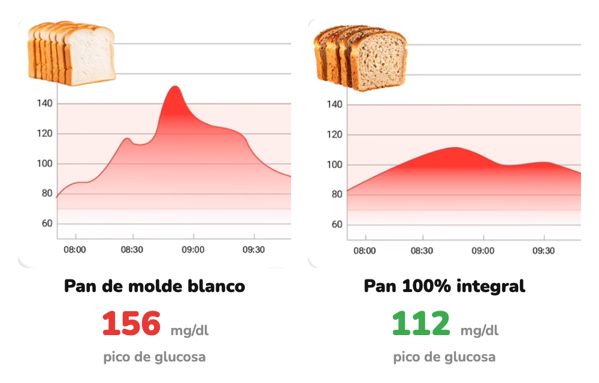

Cómo afecta
Misma tostada. Distinto pan.
Cambiamos solo el tipo de pan y medimos la glucosa.
Desliza →
Hacemos visible lo invisible
Cambiamos solo el tipo de pan y medimos la glucosa.
Desliza →

Curvas reales de una Viber, misma tostada en dos días. La respuesta puede variar entre personas.
Mira la etiqueta: que el primer ingrediente sea harina integral (100%).
Desliza →
glucovibes.com